Conditions allow you to control the behavior of the form based on form field values. For instance, you can enable an action or show a tab for another form, based on what the user enters or selects in the form.
You can specify conditions for any field or action button on the Form. Conditions take the following form:
You can specify multiple criteria, choosing either ALL or ANY for a set of criteria. You may also nest conditions up to 3 levels. If the first criteria is true, then the second criteria will be evaluated; if the second set is true, the third criteria will be evaluated. At each level you may specify ALL or ANY for multiple criteria.
Example Conditions
Field value makes a hidden field visible:
IF Change Request Type Is equal to "Operational" Then {Field Name} is VISIBLE
Field value makes a form tab visible:
If IncidentType contains "Environmental" Environmental Details is VISIBLE
In Form Designer, click the arrow to expand the Conditions section to display possible actions.
You can also close the Fields and Actions Form Designer sections to more easily view the Conditions section.
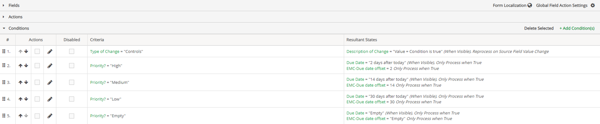
To edit a condition, in the Conditions list, select the edit pencil next to the condition you want to edit.
To disable a condition, in the Conditions list, select the Disabled checkbox next to the condition you want disabled.
Disabling a condition is convenient when troubleshooting conditions rather than deleting conditions. This allows users to still have conditions available if needed in the future by unchecking the disabled checkbox., rather than having to rebuild conditions.
To delete a condition, in the Conditions list, check the Action box next to the condition and click Delete Selected.
Any adds, edits or deletions of conditions will only be completed when you save the form. Click Cancel if you do not want to save changes.
In the Conditions section of Form Designer, select Add Condition(s).
You can decide whether you want to view the Field Labels or Field Names by choosing the appropriate button top right. This can help reduce confusion when the field names do not match the labels used on the form.
Select the criteria that will prompt some action.
First, select a field from the dropdown list, then the logical operator, and the value that will trigger the action.
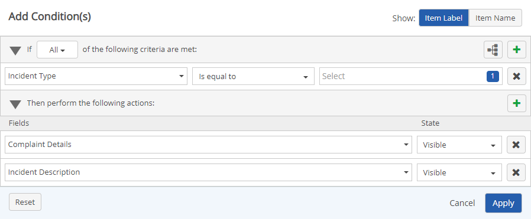
The logical operators available for a condition will depend on the type of field selected.
Values may be text, a numeric value or NULL. If the independent field is a dropdown list, list options will be shown. A modal is available to select date and time field values. When a text box is presented, you can enter a text or numeric value, with max length 100 characters. To specify wildcard values use an asterisk (*).
Nested Conditions can be used to define a second set of criteria to be met if the primary condition is true. To add nested criteria, click the Hierarchy button:
Select the action(s) to be performed when the criteria are met.
Select a field to be acted on, then the state to impose.
States supported are:
To add a second action, click the + button and choose another action.
Click Apply.
If there are multiple conditions acting on the same field state, a message will be displayed identifying the conditions in conflict. You can combine the two statements in one, using the ALL or ANY parameters to accomplish what you want.
Object fields used in Conditions are treated as text. If you are using list values, you will need to type in the list values manually. Since it is possible to return multiple values because there may be more than one object, even numeric fields must be treated as text (which might, for example, return "3;3;4;5;6").
You may remove any fields on the form template that you do not want to appear on the form for a particular step, essentially hiding the fields.
In order to be used in conditions, a field must be present on a form, but it may be hidden. If you need to use hidden fields in condition statements you will need to enable the use of the hidden field with the option "Process when field is hidden". For example, hidden fields may be used to trigger notifications, or you may just want to hide fields that are not necessary for users to see but still set a value on the field based on the user's actions in the form.
To hide a field on a form and enable a conditional action:
Click Apply.
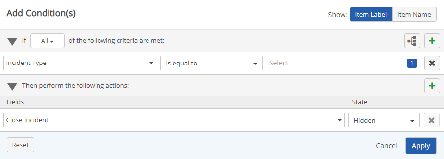
You can now create another condition that will change the value of the hidden field on specified criteria.
In the result section, select the field that you hid. Set the resultant state to Value= and select the value.
To allow the hidden field to be acted on, check Process when field is hidden.
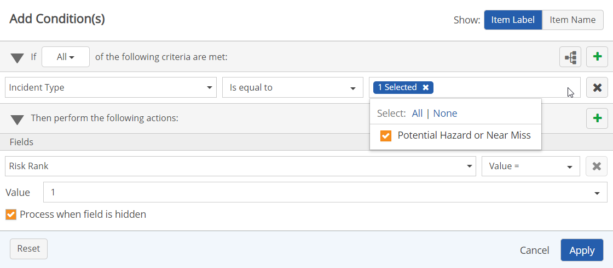
To use conditions, a field must be present on a form. If you need to use Value fields that can be reprocessed when updated in condition statements, you will need to enable the use of value fields that can be reprocessed with the option "Reprocess on Source Field Value Change". For example, you may want to set a value on a field based on the user's actions in the form.
To apply conditions to a Value Field that can be reprocessed when updated:
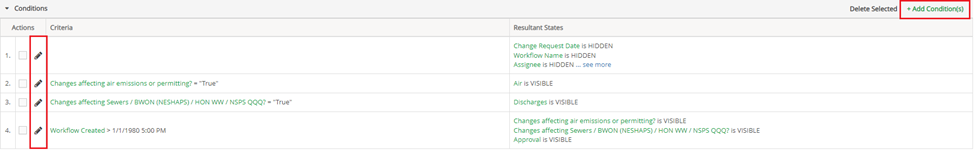
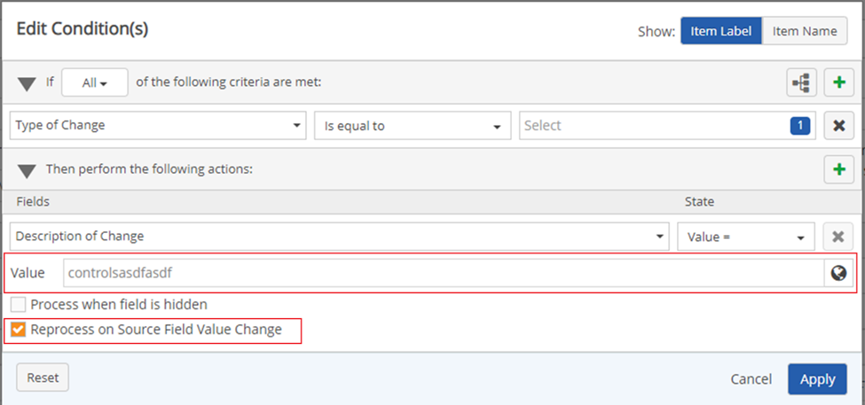
On the Form Designer page, in the Fields section, the Field of interest should have the Default value filled out, and the Read only and Reprocess on Source Field Value Change checkboxes selected (see Form Designer).
Enable “Only Process when True” for each condition in a use case where multiple conditions are created to affect the value of a single field. If “Only Process when True” is not selected and there is a list of conditions that affect the value of a single field, the last condition will process as true while all previous condition created will process as if they are false.
Below is an example of When “Only Process when True” is not enabled, and a Priority Field is created in designer mode with three conditions, the criteria being High, Medium, or Low Priority with assigned Due Date values that are expected to populate.
When “Only Process when True” is not enabled
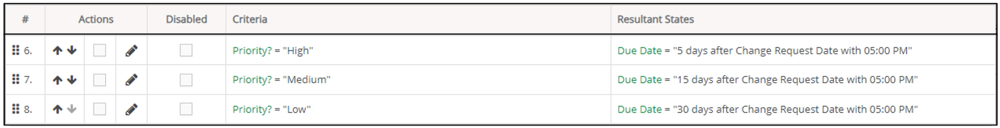
In Advanced Workflows (WAB):
When High or Medium priority is selected, no values populate in the Due Date fields.
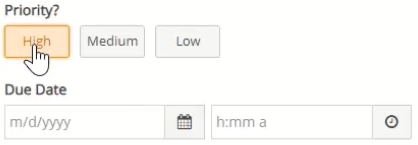
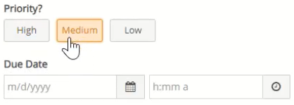
However, when Low priority is selected the expected values populate in the Due Date fields.
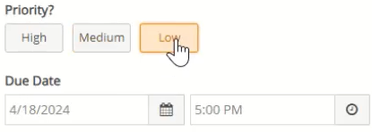
Below is an example of when “Only Process when True” is enabled, and a Priority field is created in designer mode with three conditions, the criteria being High, Medium, or Low Priority with assigned Due Date Values that are expected to populate. Additionally, when a Priority level is not selected for the field, the Due Date value fields should be empty (null condition). This is done by creating an Only Process when True condition when Priority is Empty.
If a null condition is not created when a priority is not selected, then the Due Date value field will have the values remaining from the last selected Priority.
When “Only Process when True” is enabled
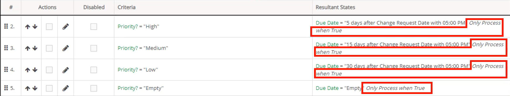
In Advanced Workflows (WAB):
When High priority is selected, values populate in the Due Date fields.
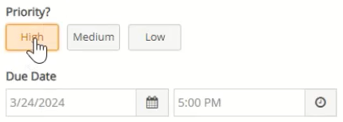
When Medium priority is selected, values populate in the Due Date fields.
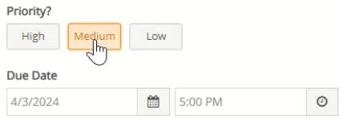
When Low priority is selected, values populate in the Due Date fields.
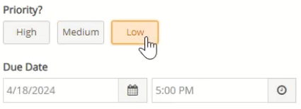
When no priority is selected, no values populate in the Due Date fields.
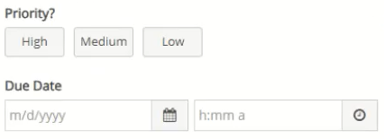
To enable only Process when True for a condition:
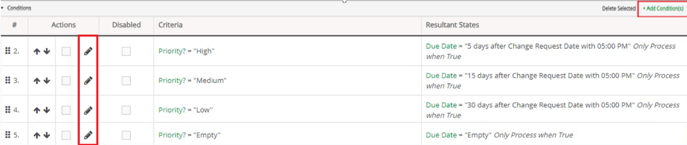
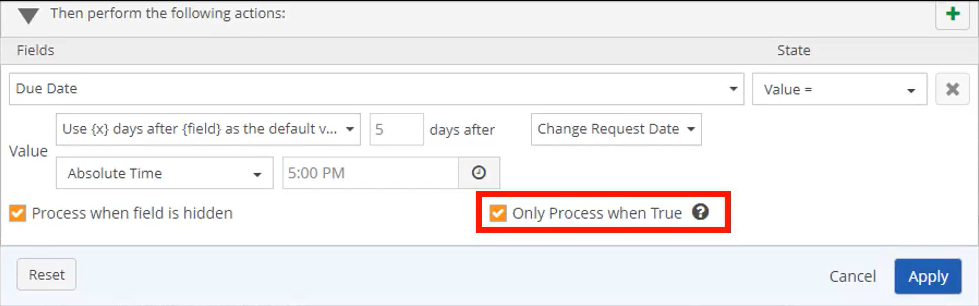